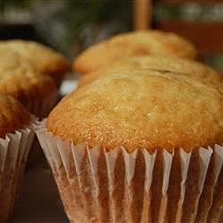

Vanilla Cupake

Dozen vanilla cupcakes takes around 40 minutes to make
- 150g of softened butter
- 150g of fine sugar
- 340g of self-rising flour
- 3 eggs
- 1 teaspoon of vanilla extract
- Prehead oven to 175 degrees C. Grease the muffin pan, or line with cups/silicone baking cups
- Mix butter and sugar in a bowl, until its light and fluffy
- Stir in the eggs one at a time blending well after each.
- Stir in the vanilla and flour until mixed
- Spoon the batter into cups diving evenly
- Bake in the oven until tops spring back when lightly pressed.(about 18-20 minutes)